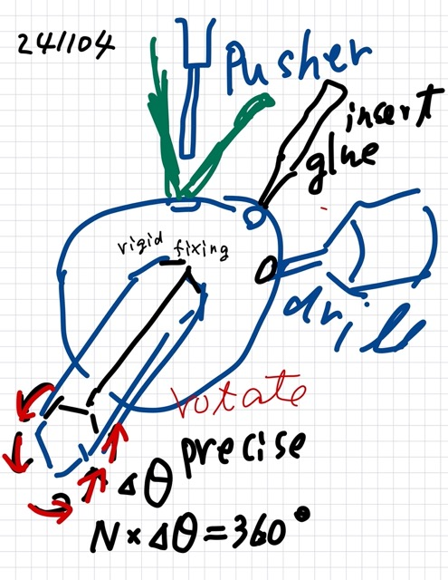
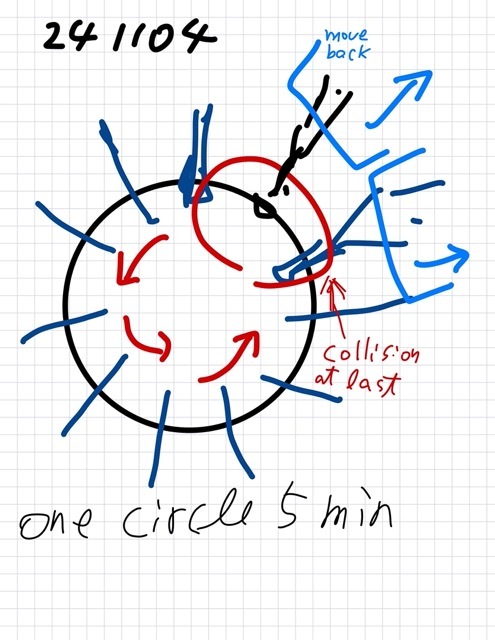

The brushing ball manufacturing¶
{241104}, {241109}
### Purpose and Objectives¶
Attach N brushes around the circumference of the ball.
Produce as many as possible in the shortest amount of time.
Develop a method (production process) that allows completing the task of attaching brushes around the ball’s circumference in 5 minutes, or ideally, 3 minutes.
### Approach¶
Attach N brushes around the ball’s circumference. To do this, rotate the ball slightly (fixed small angle) each time, and insert and fix a brush each time.
N steps of rotation (360 degrees / N) will be made with this automatic machine.
There are three types of tasks involved in the process of attaching the brushes: #. Drill a small hole (into which the brush’s rod will be inserted) #. Inject adhesive into the small hole #. Set a tow ended brush rod and pressing it into small hole and place using a push rod machine.
Develop a process that allows the entire circumference of the ball to be completed with just one full rotation. This will speed up the installation on each circumference.
Switch between the three tasks by rotating the ball in steps of 3 angles.
The system will be driven by a stepping motor, but it’s essential to confirm first that the task can be successfully completed manually before automating.
If the rotation reaches the final brush installation, tilt the jig (machine tools of three kinds) backward after inserting a brush, two open holes are still left(the number N-2) [note]. Here it is ensuring that the already attached brush axes do not interfere (i.e., the rotation should not stop due to obstruction).
{kind=link}
_[note] Two holes are left to do drilling, and adhesive insertion),
### Precautions to order for automating macjine¶
(Things to consider when ordering a machine)

Ensure that there is no wobbling or misalignment of the ball and rotation axis, so that when inserting a rod into the ball, it is securely fixed in place.
The axis must rotate precisely with the stepping motor, completing exactly N steps to complete one full rotation (360 degrees) and return to its starting position.
Ensure that the positions of the drilled holes are consistently accurate across all N steps of rotation (360 degrees / N), and improve the precision of the rotation axis (suggest using a stepping motor).
The drilling tool and adhesive insertion must be equipped with a mechanism to tilt the jig backward. However, ensure that the sliding surface is firm and heavy enough to prevent any misalignment when returning to the starting position.
{kind=link}
Let me know if you need further clarification!